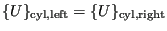
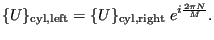

Next: Kinematic and Distributing Coupling Up: Boundary conditions Previous: Multiple point constraints (MPC) Contents
These are special kinds of multiple point constraints triggered by the presence of at least one *CYCLIC SYMMETRY MODEL card and possibly in addition by a *TIE, MULTISTAGE card. An example of a cyclic symmetric model is given in Figure 145. It consists of a sector repeating itself several times along the circumference. For being truly cyclic symmetric also the loading and boundary conditions have to satisfy the same cyclic symmetry. For static calculations the surfaces delimiting the cyclic symmetry sector exhibit the same displacements in cylindrical coordinates:
 |
(210) |
These multiple point equations are generated automatically within CalculiX. For frequency calculations these equations have to be modified depending on the nodal diameter N which is requested, i.e. the number of waves along the circumference one is interested in. For a structure with M identical sectors the resulting equations are:
 |
(211) |
These are still linear multiple point constraints, however, the coefficients are now complex. Therefore, the stiffness and mass matrices are also complex, but the ensuing eigenvalue problem can be reduced to a real one double its size. For details the reader is referred to [24], Section 2.10.